Inspired by the chaos game.
Looking for the chaos.
Reading about chaos theory and fractals, I discovered a family of algorithms known as chaos game. The term “chaos game” refers to a method of creating fractals, using a polygon and a point selected at random inside it. The chaos game is an iterative algorithm, it draws points in the canvas iteratively, therefore GLSL is not the appropriate language for this kind of artwork, the canvas APIs would be a more natural choice. Nevertheless, I want to practice with GLSL and so I went on with it.
A GLSL algorithm inspired by the chaos game.
The algorithm I came in, strictly speaking, is not the chaos game.
As with the chaos game, it starts with a polygon V,
defined as a list of vec2 points in the set
S = [0, 1] x [0, 1], and a further point
p in the same set. Given the point p and
the polygon V, the algorithm returns a point
v in V, i.e. one of the polygon vertices.
The returned vector v determines the colour of the
pixel at position p. Therefore, if the polygon
V has N vertices, the resulting image will
have at most N colours.
 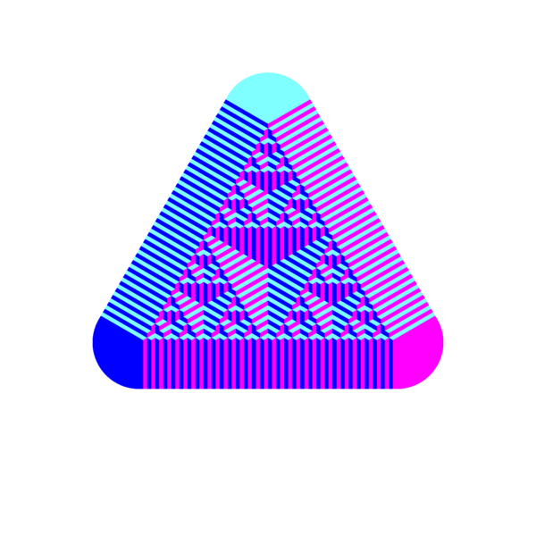
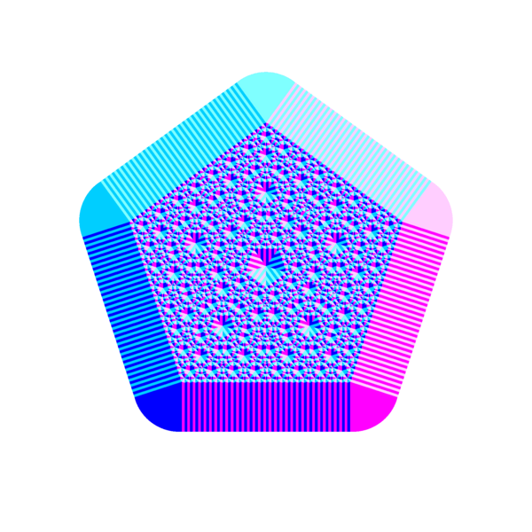
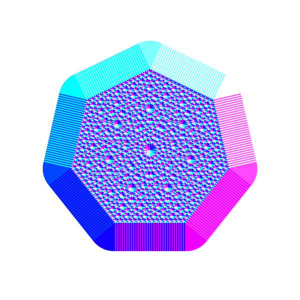
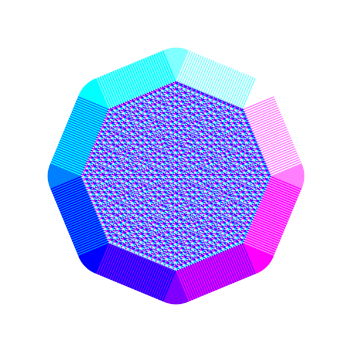
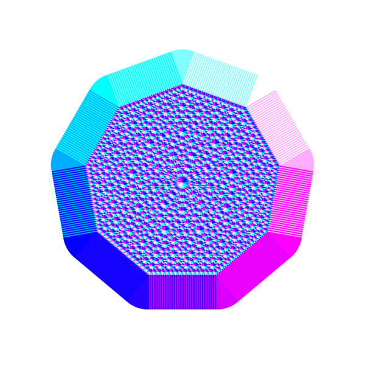
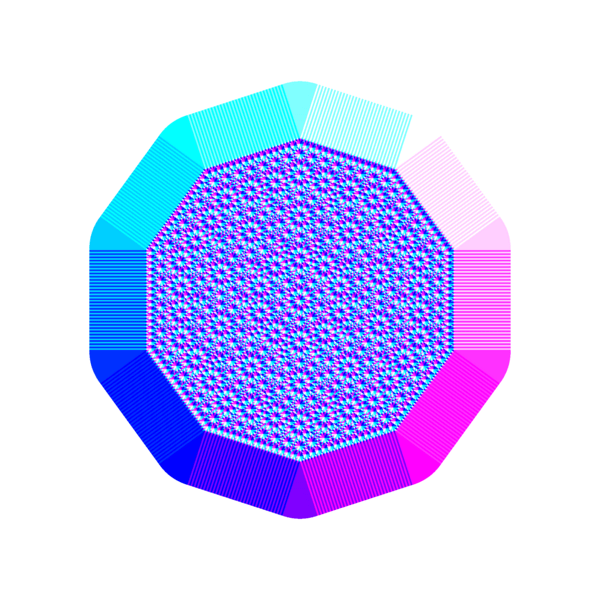
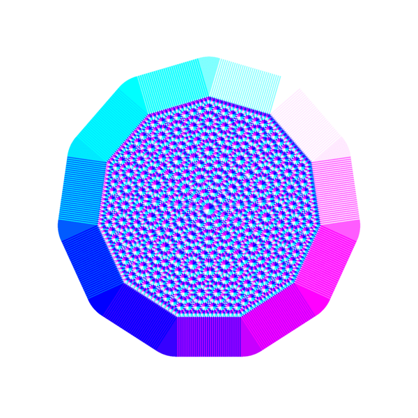
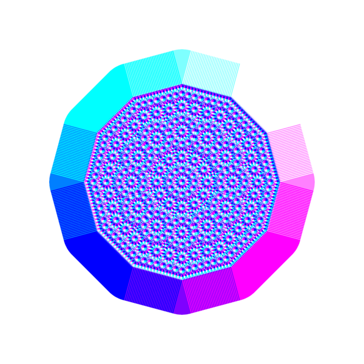
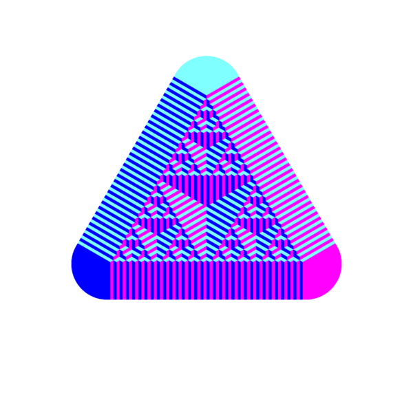
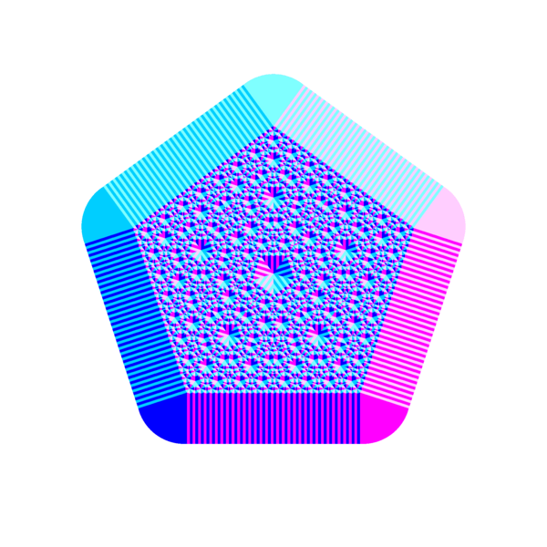
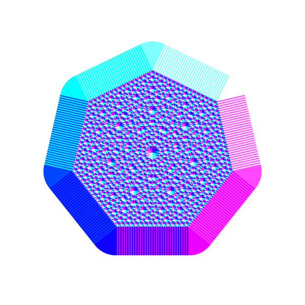
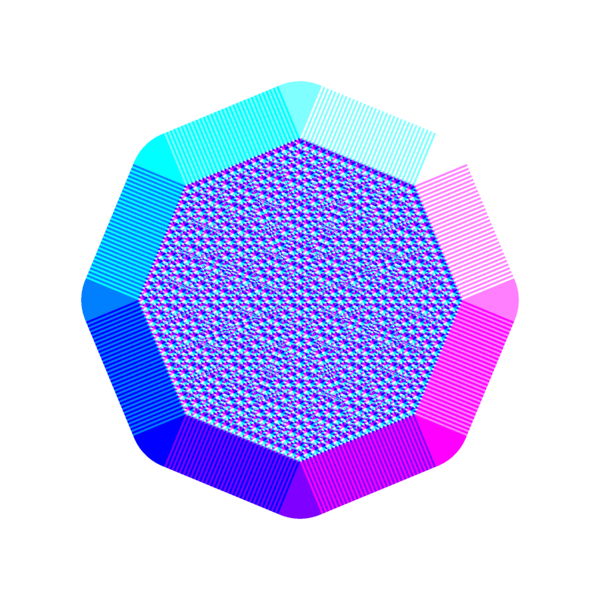
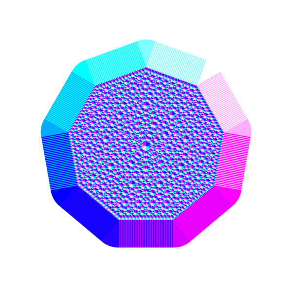
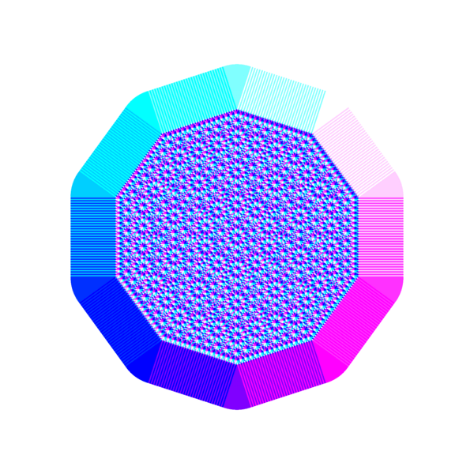
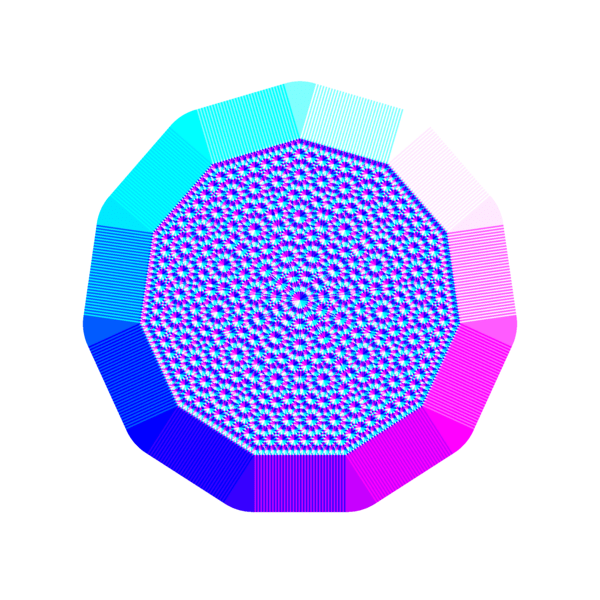
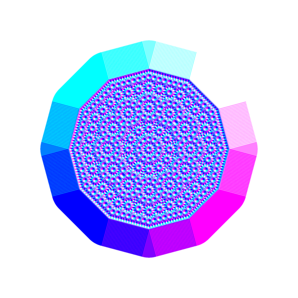
Find the polygon vertex nearest to a given point.
The algorithm iterates a couple of steps for a fixed and predefined amount of times.
The first step finds the nearest vertex v in
V to a given point p in S. In
listing 1, V is defined as a
regular polygon of N vertices and the function
nearest returns the nearest vertex v to
the point p given as argument.
vec2 nearest (vec2 p) {
const float PI = 3.141592653589793;
const float N = 3.; // number of vertices
vec2 v = vec2(1., 1.); // output initial value
float d = 10.; // distance initial value
for (float i = 0.; i < N; i++) {
// vertex of a regular polygon of N vertices
vec2 k = vec2(
.5 + sin((2. * PI / N) * i),
.5 + cos((2. * PI / N) * i)
);
if (distance(p, k) < d) {
v = k;
d = distance(p, k);
}
}
return v;
}Listing 1.
Function nearest calculate the nearest vertex to
the point p given as argument. Using the variable
k, the for loop
implicitly defines the list of vertices. In the
example, the list contains the vertices of a regular polygon of
N = 3 vertices.
Calculate the initial point of the next iteration.
The second step takes inspiration from the chaos game, the idea is
to define the new initial point
p1 given the current initial point
p and its nearest vertex v.
I calculated the symmetric point of v with respect to
p, listing 2 shows the actual
calculation. Anyway, this is just one of many solutions and it could
be interesting to explore alternative functions.
Note that the new initial point is not guaranteed to fall in
S.
vec2 nextPoint (vec2 p) {
return p + p - nearest(p);
}Listing 2.
p1 is a function of p and
of its nearest vertex v = nearest(p).
At this stage, a new iteration starts with
p1 as input point: we calculate the nearest
vertex v1 and its symmetric point
p2. The number M of iterations is fixed and the
algorithm returns a point pM.
vec2 pm (vec2 p) {
vec2 z = p;
const int M = 5;
for(int i = 0; i < M; i++) {
z = nextPoint(z);
}
return z;
}Assign pixels colours in the fragment shader.
It is time to assign the colour to the pixel at position
p. Given pM, we calculate, for the last time, its nearest vertex. The nearest
vertex will define the red and green channels of the pixel colour.
vec3 field (vec2 p) {
vec2 q = pm(p);
vec2 v = nearest(q);
return vec3(v, 1.);
}
void main() {
vec3 color = field(st);
gl_FragColor = vec4(color, 1.0);
}Listing 4.
Note that the iterative function pm, given the
initial point p in S, returns a point
pM that, in general, may be outside
S.
The function nearest solves this problem in the
following way: if the nearest vertex has a distance lower than
the distance initial value (d = 10. in the example)
then we use that vertex for the pixel colour, otherwise we use
the vertex initial value (v = vec2(1., 1.) in the
example, which will map to white).
Further explorations.
The algorithm is open to further explorations, you can easily modify
the polygon vertices V and the number of iterations
M to see how the resulting artwork is affected.